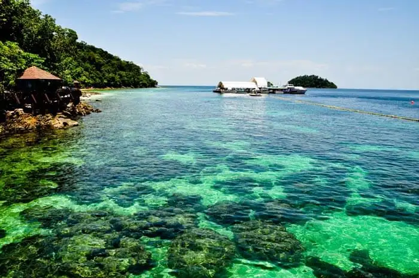
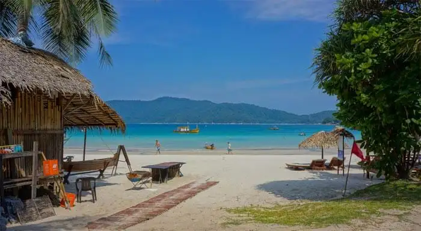

We have shortlisted some of the best island to visit in Malaysiawith your family and friends for an awesome brief getaway.
Prepare to be thrilled and have the best experience of sightseeing in Malaysia.
 1.Langkawi Island – Land Of Azure Waters
A beautiful archipelago, Langkawi Island is a destination known for its vast expanse of sandy beaches and azure blue water which enthrall the tourists. The Langkawi Geopark is a UNESCO heritage site that attracts a large number of visitors and is ,undoubtedly, the top among the must visit places in Malaysia. It is a perfect manifestation of the geological heritage in the area. It is one of the best places to visit in Malaysia with family.
2.Perhentian Island – Witness The Colorful Corals
A group of stunning, coral fringed islands - the Perhentian Island is located almost 19 km away from the North-eastern Malaysia. It is a part of marine park where activities like fishing are strictly prohibited. It is one of the most unique places to visit in the country. It is also counted among the best places to visit in Malaysia with friends.
3.Penang – The Finest Of All
Located on the northwestern coast of Peninsular Malaysia, Penang is one of the finest Malaysian islands that you shouldn’t miss on your trip. Famous as an exotic destination, the place offers its visitors so much to explore. This city’s Wonderfood Museum, Fort Cornwallis, Reclining Buddha, Burmese Temple and Waterfront Village just happen to be some of the best places in Malaysia for you to visit.